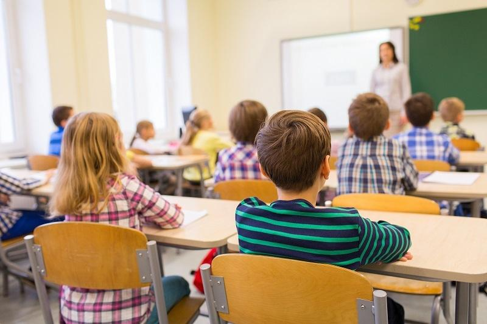

Online Learning vs. Traditional Classroom: Pros and Cons
In recent years, the landscape of higher education has witnessed a significant transformation. The advent of online learning has introduced a new dimension to the traditional classroom experience. While both approaches have their merits, they also come with their share of drawbacks. In this blog, we will delve into the pros and cons of online learning and traditional classroom education to help you make an informed choice.
Online Learning:
Pros:- Flexibility: One of the most significant advantages of online learning is its flexibility. Students can access course materials and lectures at their convenience, allowing them to balance education with work, family, and other commitments.
- Accessibility: Online courses break down geographical barriers, making education accessible to a global audience. Students can choose from a wide range of programs and institutions, regardless of their location.
- Cost-Efficiency: Online learning can be more cost-effective, as it eliminates expenses associated with commuting, campus housing, and physical course materials. Many online courses also offer reduced tuition fees.
- Personalized Learning: Online platforms often incorporate adaptive learning technologies, tailoring the learning experience to individual needs and pacing. This can enhance comprehension and retention.
Cons:
- Lack of Face-to-Face Interaction: Online learners miss out on the interpersonal interactions and networking opportunities that traditional classrooms provide. This can impact social and communication skills.
- Self-Discipline Required: Success in online courses demands a high degree of self-discipline and motivation. Some students may struggle with the autonomy and time management required.
- Technical Challenges: Access to a stable internet connection and familiarity with technology is essential for online learning. Technical issues can disrupt the learning process.
Traditional Classroom:
Pros:
- In-Person Interaction: Traditional classrooms facilitate immediate interaction between students and instructors. This allows for real-time feedback, discussion, and collaboration, enhancing the learning experience.
- Structured Environment: The physical classroom provides a structured environment, which can be beneficial for students who thrive on routine and guidance.
- Social Engagement: Campus life offers a rich social experience, fostering friendships, extracurricular activities, and networking opportunities that extend beyond the classroom.
- Access to Resources:Access to Resources: Traditional students have direct access to campus libraries, laboratories, and other resources, enriching their educational experience.

Cons:
- Limited Flexibility: Traditional classroom education adheres to a fixed schedule, which may not accommodate the diverse needs of all students. This can be especially challenging for working adults.
- Geographical Constraints: Traditional education requires students to be in close proximity to the institution, limiting choices and accessibility for some individuals.
- Higher Costs: Tuition fees, housing, and commuting expenses can add up, making traditional education more costly than online alternatives.
- Inflexible Learning Styles: The one-size-fits-all approach of traditional classrooms may not cater to diverse learning styles and paces, potentially leaving some students behind.
In conclusion, the choice between online learning and traditional classroom education ultimately depends on individual preferences, circumstances, and learning styles. Online learning offers flexibility and accessibility but may lack some aspects of traditional education's social and interactive elements. On the other hand, traditional classrooms provide structure and in-person interaction but may be less accommodating to those with busy schedules or specific needs. The ideal choice may lie in finding a balance between the two or selecting the format that aligns best with your educational goals and lifestyle.